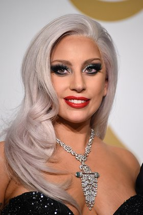

Koç Burcu Yorumlarınız
Koç Burcu İçin Günlük, Haftalık ve Aylık Burç Yorumlarınız Hazır!
KOÇ BURCU KENDİNİ DİNLEMEYE HAZIR MISIN?
Ateş Grubunun haylaz çocuğu... (21 Mart-20 Nisan) Yıldızın: Mars Grubun: Ateş, Pozitif Niteliği: Öncü Burcunun cinsiyeti: Eril Yeteneğin: Canlılık ve hareket Seni sen yapan: Yeni girişimler, cesaret, atılganlık Hedeflerin: Öncülük, liderlik, yol göstericilik, yenilikçilik Sonuç: Başarı ve zafer Bastırman gereken huyun: Kesinlikle sabırsızlık, çabuk sinirlenmek Şanslı günün: Salı Şanslı sayıların: 7, 47, 87 Şans getiren taşın: Şans getiren rengin: Narçiçeği, Ateş kırmızısı ve kırmızının her tonu Sevdiğin Çiçekler: Sardunya, limon çiçeği, manolya, lavanta çiçeği Bitkilerin: Lale, Gelincik, Nar çiçeği, papatya Müzik tarzın: Hızlı tempolu parçalar ve marşlar Vücutta temsil ettiğin bölgeler: Baş bölgesi ve yüzü temsil eder. Mevsimin: İlkbahar Olası Hastalıkların: Migren, yüze alınan darbeler, baş ağrısı, diş ağrısı, yüksek ateş, adele rahatsızlıkları, yüksek tansiyon, beyin iltihabı… Sağlına yararlı besinler: Pancar, marul, salatalık, ceviz, elma, limon, balık süt ve süt ürünleri Uzak durulması gereken besinler: Mayonez, soslar, makarna, kızartma ve yağlı yiyecekler Uyumlu Burç: Aslan ve Yay Karşıt Burcun: Terazi Başarılı olacağın meslekler: Politika, organizatörlük, yöneticilik, endüstri, mühendislik, işletmecilik, komutanlık, kimyacı, operatör, demir ve çelik işleri, makine, mizah ve fıkra yazarlığı, eleştirmenlik, ressamlık, müzik, konfeksiyonculuk. Olumlu özelliklerin: Pratik, lider ruhlu, bulunduğu ortamlarda rahatça sosyalleşen, cazibeli Olumsuz özelliklerin: Öfkeli, patavatsız, kıskanç, sabırsız Burcunun Yönettiği ülkeler: İngiltere, Filistin, Danimarka, Almanya, Japonya, İsveç, Suriye Burcunun Yönettiği şehirler: Berlin, Birmingham, Saragossa, Nepal

Lady gaga

Robert Downey Jr.
Ezgi Mola
Şebnem Ferah
Erol Evgin

Emma Watson